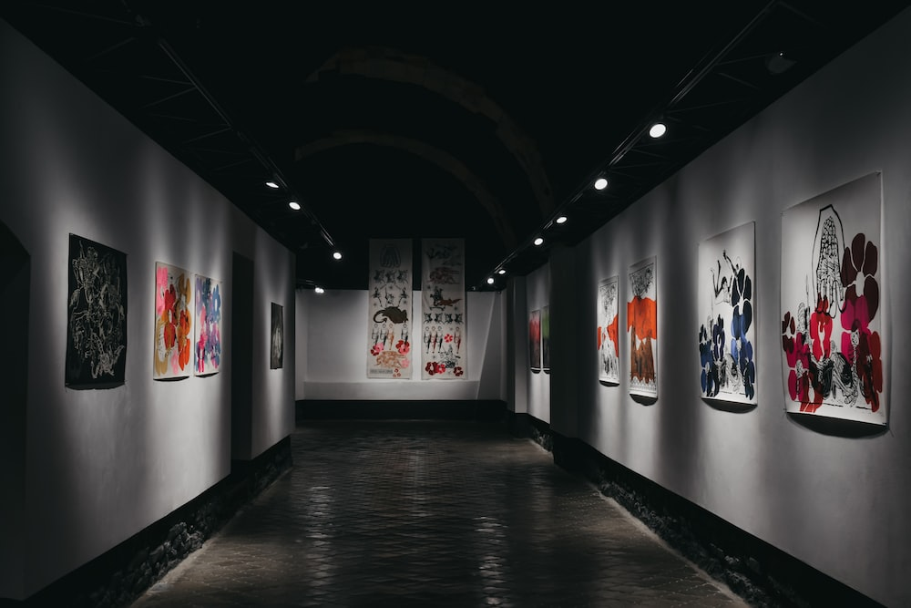

The Alumni Art Exhibition is scheduled for March 1 – April 5 and will feature artworks from Concordia’s former art students.
Jennifer Furr, Senior Director of Alumni and University Relations and mastermind of the show recently commented, “Each year we explore different ways to reconnect with our alumni especially at Homecoming. The idea of connecting with those who graduated from our Art Department program has been on my radar for a number of years. In discussing with Professor Bockelman ways to engage these former students it was obvious that an Art Show would provide a great way to reconnect but also lift up the unbelievable talent our alumni possess. I have been overwhelmed by the response of artwork coming in for the show and the enthusiasm from alumni young and old around their support of the Art Department and faculty. I look forward to seeing the exhibit and sharing with others how talented our Concordia alumni are.”
For this show, each alumnus submitted a work that fits the dimensions of 12” X 12”. All mediums will be featured including photography, sculpture, painting, drawing, printmaking, graphic design, and mixed media.
James Bockelman, the director of the Marxhausen Gallery of Art stated, “It’s wonderful to see a tremendous response so far. And particularly, the diversity of art and artifacts that people have sent to the gallery, all of which remind me of their ongoing commitment to the significance of art in its variety of expression”.
Homecoming weekend is Friday, October 1 and Saturday, October 2. There will be opportunities to take a tour of the Brommer Art Center, visit the Marxhausen Gallery of Art, connect with emeriti and current faculty members, as well as reconnect with classmates.
An alumni art gallery or exhibition is an excellent way to showcase the creative talents and achievements of former students from a particular institution. This type of event not only celebrates the artistic accomplishments of alumni but also serves as an inspiring platform for current students and the wider community to engage with diverse artworks. Here are some points and matters related to an alumni art gallery or exhibition:
1.Diverse Artistic Expression:
An alumni art gallery brings together a diverse range of artistic expressions, styles, and mediums. This can include paintings, sculptures, photography, digital art, installations, mixed media, and more. The variety of artworks on display reflects the rich and varied experiences of alumni.
2.Showcasing Progression:
An alumni art exhibition can often demonstrate the artistic journey and progression of former students. It's fascinating to see how artists' styles, techniques, and themes have evolved since their time at the institution.
3.Networking Opportunity:
Such exhibitions provide a unique networking opportunity for alumni to connect with each other, share experiences, and potentially collaborate on future artistic projects.
4.Inspiration for Current Students:
Current students can be inspired by the achievements of their predecessors. It showcases what is possible with the education and resources provided by the institution, motivating them to push their own creative boundaries.
5.Community Engagement:
An alumni art gallery can attract not only alumni and current students but also members of the local community and art enthusiasts. This fosters a sense of community engagement and involvement.
6.Art Market Potential:
For emerging artists among the alumni, an art gallery can serve as a platform to sell their works and gain exposure to potential buyers and collectors.
7.Educational Workshops and Talks:
Alongside the exhibition, the event can include workshops, artist talks, panel discussions, and other educational activities. This adds a layer of interactivity and depth to the experience, allowing visitors to engage with artists on a personal level and learn more about their creative processes.
8.Preserving Institution's Legacy:
An alumni art gallery contributes to the institution's legacy by showcasing the achievements of its former students. It's a testament to the quality of education provided and the creative impact it has had.
9.Collaborative Opportunities:
Alumni from different artistic backgrounds might find opportunities for collaboration. This could include interdisciplinary projects, joint exhibitions, or even partnerships with other institutions or organizations.
10.Digital Exhibition Options:
In addition to physical galleries, consider offering a digital exhibition or online platform. This extends the reach of the exhibition beyond the local community and allows a wider audience to appreciate the artworks.
11.Catalogs and Documentation:
Creating a catalog or documentation of the exhibition ensures a lasting record of the event. This can be shared digitally or in print, allowing the artworks and their stories to be preserved for future generations.
12.Funding and Sponsorship:
Depending on the scale of the exhibition, seeking funding or sponsorship from art-related organizations, local businesses, or even alumni themselves can help cover costs and enhance the overall experience.